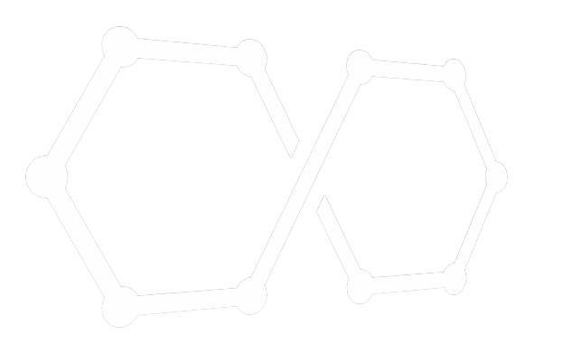
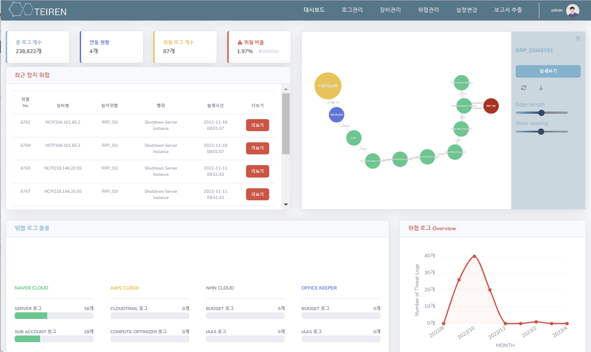
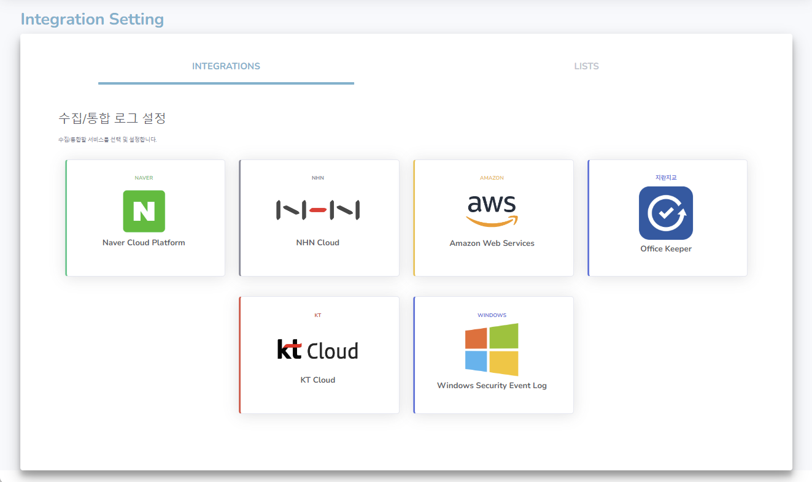
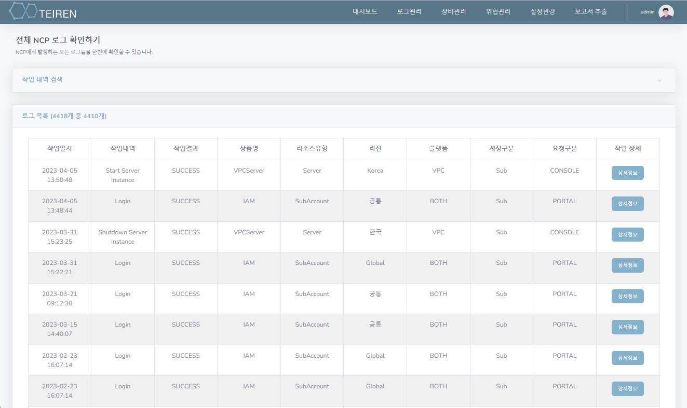
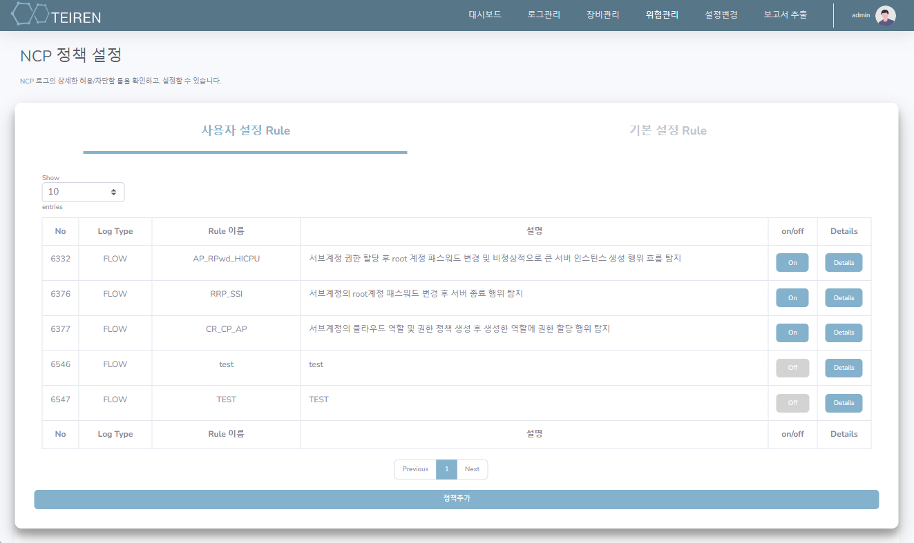
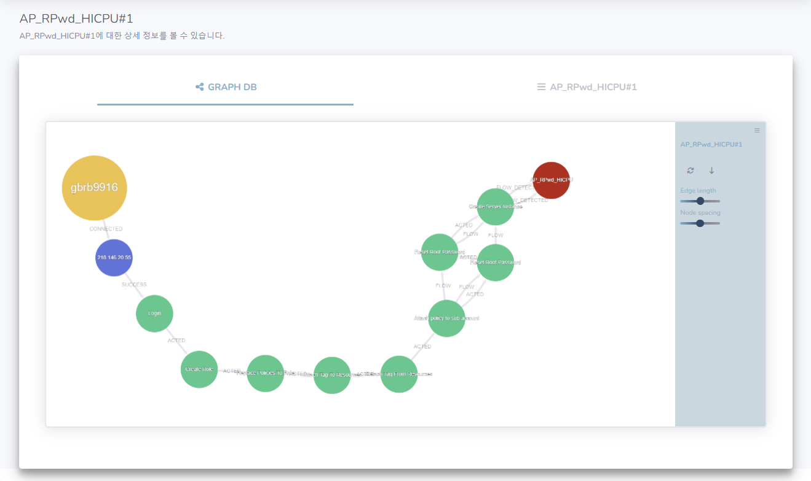
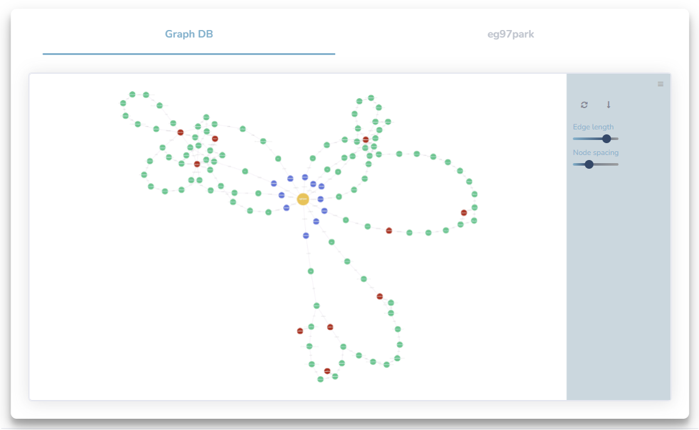
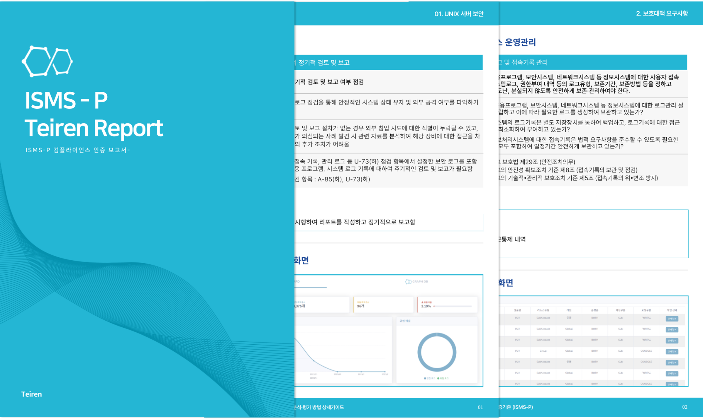

기업의 보안 오답노트
테이렌
SIEM
Teiren SIEM
Teiren SIEM
Graph DB를 활용해 로그 기업 시스템에 대한 통합적인 보안 관리를 해주는
로그 상관관계 분석 위협탐지 솔루션
로그 상관관계 분석 위협탐지 솔루션
Teiren SIEM
테이렌 SIEM
테이렌 SIEM(Teiren SIEM)은 Graph DB를 활용한 향상된 성능과 편리한 시각화를 통해 최적화 된 보안 및 로그 관리를 수행해 주는
솔루션입니다. 기업
시스템에 대한 로그·이벤트 통합 관리 뿐만 아니라 보안 관리, 자산 관리, 컴플라이언스 관리까지 동시에 해결할 수 있는 최고의 SIEM을 만나보세요.
Features
주요 기능

대시보드
Teiren SIEM의 대시보드에서는 총 로그의 개수와 위협로그 개수, 위협 비율, 최근 탐지 위협 등을 확인함으로써 실시간 위협에 대해 모니터링
할 수 있습니다. CPU / Memory / Network 등의 사용량을 실시간그래프로 제공해줍니다.
제품 연동
API를 위한 키를 입력해 다양한 클라우드 및 시스템을 연동할 수 있습니다.
현재 지원 시스템
NCP ,NHN Cloud, AWS, WinSecLog,
지란지교시큐리티 Office Keeper


로그 관리
다양한 클라우드, 시스템으로부터 방대한 양의 로그데이터들을 수집하고 수집한 다양한 로그 데이터를 통합해 웹상에서 테이블 형태로
제공합니다.
로그 원본 JSON 형식 출력 가능, 필터링 지원
위협 탐지
위협 탐지를 위한 보안 정책을 설정할 수 있습니다. 150여개의 기본 정책이 제공되며, 기본 정책만으로도 간단한 위협탐지가 가능합니다. 기업의
환경에 맞추어 상세 설정을 통해 직접 정책을 추가할 수 있습니다. 정책에 의해 탐지된 위협은 위협 알림 페이지에서 확인이 가능합니다.


사용자 행위 기반
단순히 1개의 이상 행위가 아닌 행위의 흐름을 기반으로 위협을 탐지할 수 있습니다.
위협 탐지 시 해당 위협 까지의 사용자 행위의 흐름을 한눈에 파악할 수 있도록 그래프 형식으로 시각화 하여 보여줍니다.
행위 시각화
사용자 행위를 한눈에 볼 수 있도록 시각화 해줍니다. 탐지된 위협이 어떤 흐름을 통해 발생한 위협인지, 해당 위협을 발생시킨 사용자의 다른 행위와는
어떠한 관련이 있는지를 한눈에 파악할 수 있으며, 이를 통해 위협간의 상관관계 파악이 가능합니다.
사용자 행위 패턴 기반 머신러닝 학습을 통해 위협탐지 가능


인증 보고서
컴플라이언스 인증 보고서를 함께 제공해줍니다. 기업이 준수하고 있는, 또는 준수해야 하는 컴플라이언스 항목을 자동 매핑해주며, 이에 대한 증적을
캡처본으로 만들어 pdf 형식의 보고서로 제공해줍니다.
요약 보고서 및 위협으로 탐지된 로그, 연동 현황 등에 대한 엑셀보고서
제공
Why Teiren SIEM?
테이렌 SIEM을 선택하는 이유
고도화된 위협 탐지
테이렌 SIEM은 Graph DB를 활용해 로그 간의 관계를 기반으로 분석해 보다 고도화된 위협 탐지를 수행할 수 있습니다.
시스템 간의 연동을 통해 전체 시스템 및 자산에 대한 상관관계 분석을 통한 통합적인 보안 관리가 가능합니다.
업무 효율성 증진
멀티 클라우드 환경 뿐만 아니라, 보안 솔루션, 시스템 등을 모두 연동해 다양한 환경을 SIEM 하나마으로 동시에 관리할 수 있습니다.
더불어, 보안 인증에 대한 컴플라이언스 증적 보고서를 통해 보안담당자의 업무 효율성을 증진시킬 수 있습니다.
자사 적용 가능
테이렌 SIEM은 현재 지원이 부족한 국내 클라우드를 지원합니다.
일반 중소기업 뿐만 아니라 국가주요정보통신기반시설까지, 보다 많은 기업에서 Teiren SIEM을 적용할 수 있습니다.